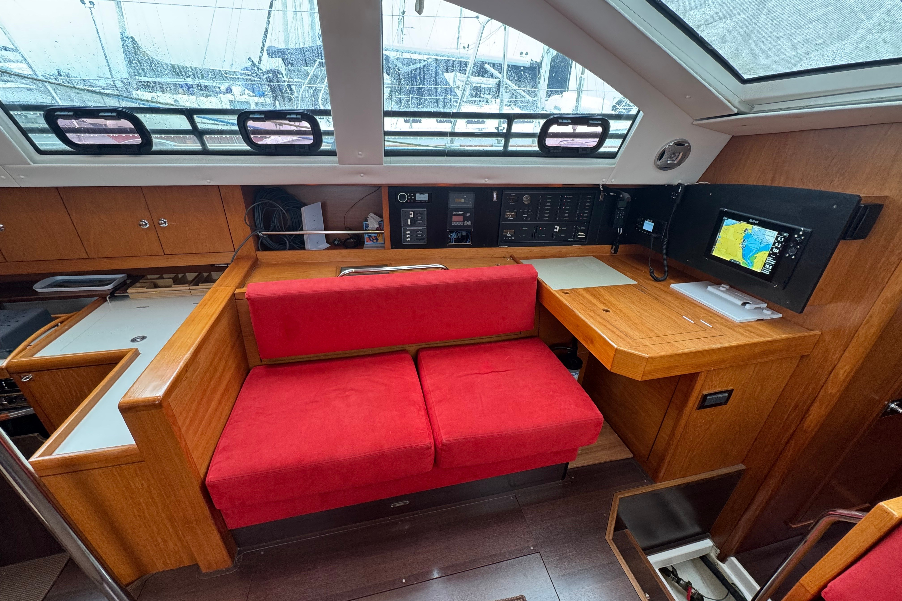
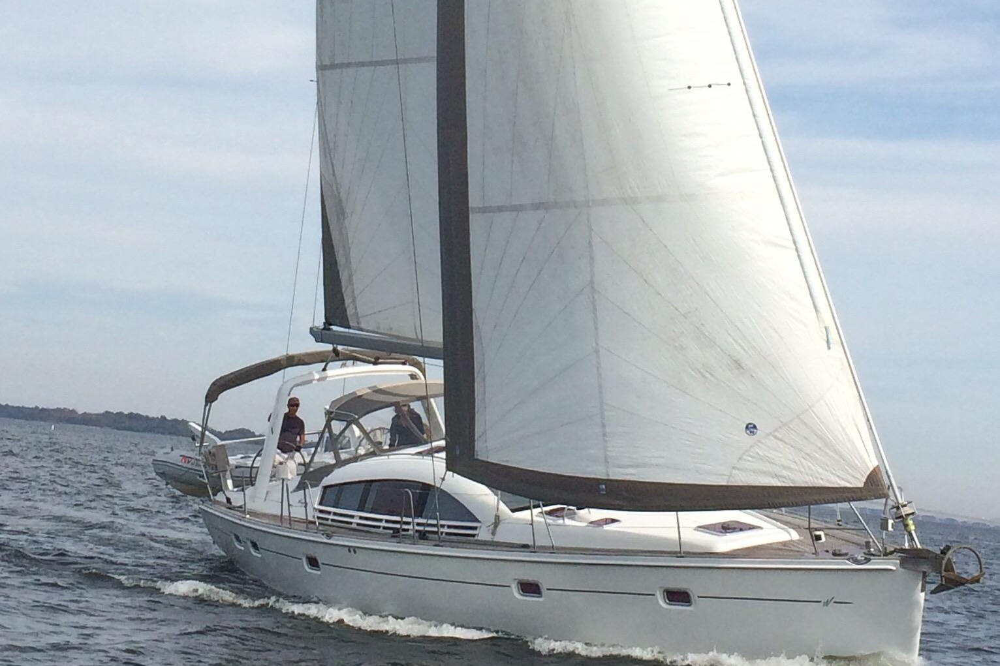
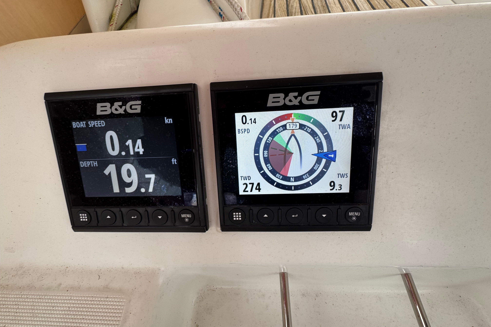
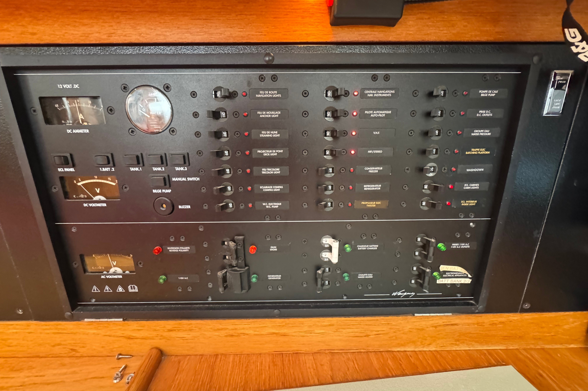
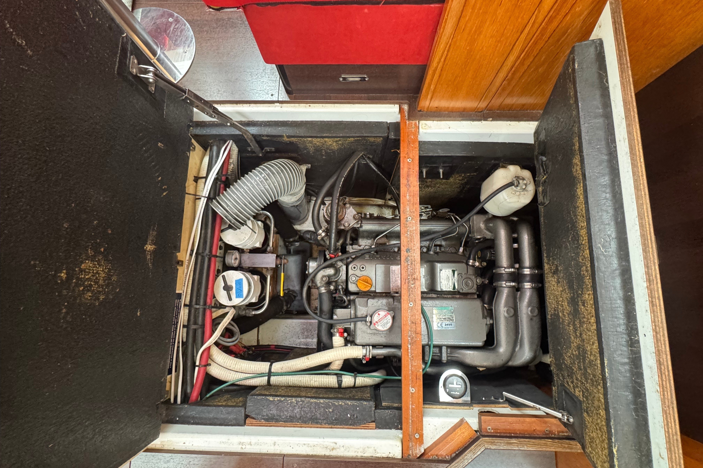
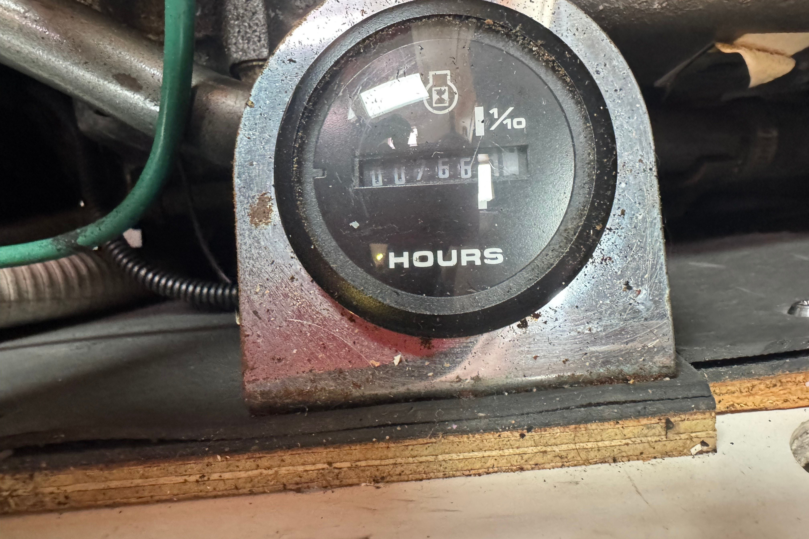

188
Displacement / length
On the class weight. A moderate cruising hull, in the same band as a lot of performance cruisers and well under a heavy full-keel boat. At the listing’s 33,296 lb the same waterline moves the ratio up toward about 203.
2008 Wauquiez Pilot Saloon 47 · Hull 34 · Anacortes
A raised-saloon cruiser with the offshore gear already bolted on, and a price that has not moved.
Planning all-in loads with the page.
The boat
Paragon is a 2008 Wauquiez Pilot Saloon 47, hull 34, offered in Anacortes by Seattle Yachts. Berret-Racoupeau drew the hull. Wauquiez built it in France, infused glass over balsa, vinylester in the outer skins, CE Category A. The point of the boat is the raised saloon: you sit up, you see the horizon, and the owner’s cabin is still aft of an aft cockpit.
The ask is $379,000. It was $379,000 in April 2024, and the print of that listing is stamped sold on 24 February 2025 at the same number.
The first owner, in Annapolis, has said publicly that hull 34 did about 40,000 miles, East Coast and then California, and that she never showed a structural or design fault. Sold in February 2021. The second chapter is California and Mexico: a 2024 packet places her at Paradise Village, Puerto Vallarta, LLC-owned, heading for San Diego, with a priced 2019–2024 refit the packet put near $85,000. The third chapter is the current one. The broker’s paragraph says the present owner bought her and sailed her up the coast to Anacortes. No 2025 or 2026 work appears on the public list. The hours still read the way they read in April 2024.
She sleeps the usual three-cabin plan: an owner’s cabin aft, a guest cabin forward, a Pullman amidships, two heads. USCG official number 1219300, name PARAGON, recreational, United States flag, built 2008, status Active on a PSIX snapshot from 9 September 2026. Owner names are not in that public record.
Class design · Sailboatdata, and this hull’s keel block
The ratios below are the published class sheet: 30,864 lb on a 41.83 ft waterline, sail area 1,132 sq ft. They describe the boat Sailboatdata prints, whose max-draft line is 6.89 ft, with a note that the shallow keel is 5.91 ft. Paragon is that shallow boat. Her listing also prints a heavier displacement, 33,296 lb, and a heavier ballast, 9,982 lb, against a factory shoal ballast often cited near 8,995 lb. Use the class ratios to understand the hull. Use the listing numbers to understand this keel.
On the class weight. A moderate cruising hull, in the same band as a lot of performance cruisers and well under a heavy full-keel boat. At the listing’s 33,296 lb the same waterline moves the ratio up toward about 203.
1,132 sq ft on the class displacement. That is a boat that will sail in light air, which is what the first owner of this hull said she did. The heavier listing weight would pull the ratio down toward about 17.5.
Class sheet, 8,931 lb of lead in 30,864 lb. The listing’s own pair, 9,982 lb in 33,296 lb, is about 30%. Either way this is a bulb keel, not a wing full of lead.
Beam 14.8 ft on the class sheet, over the cube root of that displacement. Under the common screen of 2.0. The listing beam is 15 ft 2 in. Confirm which stick and which beam are on the hull.
Sailboatdata’s 30.38 for the class weight. Brewer’s mid range: a coastal and offshore cruiser, not a motorsailer and not a light racer.
1.34 × √LWL on 41.83 ft. A theoretical displacement speed. The first owner of this hull wrote that she would sit over 8.5 knots without much effort.
37 photographs · Seattle Yachts listing, carried by Denison






As listed · years only where a page actually gives one
Lifeline batteries, November 2023, 800 amp-hours. An Xantrex 3000 inverter/charger of the same date. A 24-volt bank for the thruster, and separate start batteries. Enough to live aboard for a season. Not the lithium plant a Pacific year wants, and not something that has to be bought on day one if the Lifelines load-test.
Three Renogy 175 W panels from 2021 on a Blue Sky controller. The route’s energy note is closer to 1,000 or 1,200 watts, plus a Victron bus and an isolation transformer so a New Zealand marina at 230 volts and 50 hertz has somewhere to go. The galvanic isolator already aboard does not do that job.
Factory fuel on this listing is 104 gallons. Water is 211. Holding, on the 2024 print, is 30. The class sheet on Sailboatdata prints 172 gallons of fuel and 162 of water. This hull is not that tank plan. A long hop has to be planned around 104 gallons, or around a bladder that is not on the public list.
Side by side
| This boat, as listed | |
|---|---|
| Name | Paragon |
| Year, builder, model | 2008 Wauquiez Pilot Saloon 47, hull 34 |
| Documentation | USCG 1219300, recreational, Active as of 9 Sep 2026 |
| Ask | $379,000. Same number since the April 2024 listing |
| Where she is | Anacortes, Washington. Seattle Yachts |
| LOA / beam / draft | 47 ft / 15 ft 2 in / 5.92 ft shoal |
| Displacement on the listing | 33,296 lb. Dry weight on the 2024 print, 30,870 lb |
| Ballast on the listing | 9,982 lb. Factory shoal is often cited at 8,995 lb |
| Engine | Yanmar 4JH4-HTE, 110 hp. 530 reported, or about 770 |
| Fuel / water / holding | 104 / 211 / 30 gal. Holding is from the 2024 print |
| Cabins / heads | 3 / 2. Aft owner, forward guest, Pullman |
| Pilot Saloon 47 class | Sailboatdata |
|---|---|
| Designer, years | Berret-Racoupeau. Built 2006–2012, France |
| LOA / LWL | 47.08 ft / 41.83 ft |
| Beam | 14.80 ft |
| Draft, sheet / shallow note | 6.89 ft max. Shallow keel noted at 5.91 ft |
| Displacement | 30,864 lb |
| Ballast | 8,931 lb lead, bulb, spade rudder |
| Fuel / water, class sheet | 172 gal / 162 gal. This hull lists 104 and 211 |
| Sail area | 1,132 sq ft reported. I 63.08, J 17.16, P 56.27, E 21.00 |
| Engine, class sheet | Yanmar 4JH4-HTE, printed at 100 hp. Listings of this hull say 110 |
| Construction | Fiberglass, balsa, infusion |
| D/L, SA/D, comfort, CSF | 188.25 / 18.48 / 30.38 / 1.89 |
One boat, one price, three harbors
There is no clean class median to hide behind. What exists is this hull’s own paper. On 24 April 2024 a Yacht Sales West listing, broker Ian Van Tuyl, asked $379,000. The location field said San Diego. The prose said Paradise Village, Puerto Vallarta, heading for San Diego, and an LLC on the title. That print is stamped sold on 24 February 2025 at $379,000.
The current page, Seattle Yachts in Anacortes, Alex Knudtson, Denison last updated 17 August 2026, still asks $379,000. The equipment list and the hour sentence did not grow a 2025 season. A same-price flip is not evidence that $379,000 is what the market clears. It is evidence that nobody has had to move the number yet.
The planning close in the calculator is $340,000. That is a target so the low path can still see a $400,000 all-in ceiling. It is not an offer, and it is not a number a broker has agreed to.
TRU all-in method · editable
The blocks match the TRU file for this boat. Price, purchase costs, refit low and high, and a pile of gold. Labor is priced as hired. Insurance defaults to 2% of the price in use. Tax defaults to zero, which is only true if an Oregon buyer takes her out of Washington inside 45 days and does not park her as a Washington liveaboard. Miss that clock and Washington use tax is about 8.9%. The switch below puts that number in. This is planning arithmetic, not tax advice, and not an offer.
The $400,000 cash figure is the planning cap. It is an input. Change it. The loan line is blank on purpose.
The haul is a Sidney average for a survey lift, about $700, not a booked quote. Delivery is Anacortes to Sidney, $1,500, not a Gulf of Alaska trip. The companion .tru file saved insurance at $7,000 rather than a strict 2%.
The three cards set the closing price. This screen holds one price and lets the reserve run from low to high, which is how a TRU file totals. The low column already includes a $10,000 contingency and a $2,000 rig floor, so the ceiling path sits on the $400,000 line rather than under it.
The download is a version 2.1 file. Categories match the calculator: Anchor, Dinghy, Elec, Energy, Hull, Mech, Nav, Prop, Rigging, Safety, Sails, Other. The saved file is the workbook as it stood, insurance at $7,000 and tax at zero.
On the Anacortes dock, with a camera
Seattle Yachts · Anacortes
The listing broker on the current page. Seattle Yachts, Anacortes. The boat is centrally listed there and also carried by Denison, last updated 17 August 2026. The 2024 listing broker was Ian Van Tuyl at Yacht Sales West. That is a previous chapter, not the person to call about the boat as she sits.
Denison listing · Seattle Yachts stock 2856672 · Sailboatdata class sheet